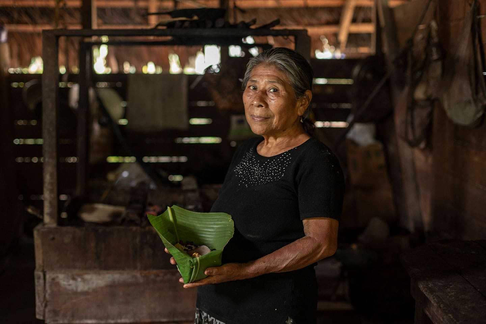
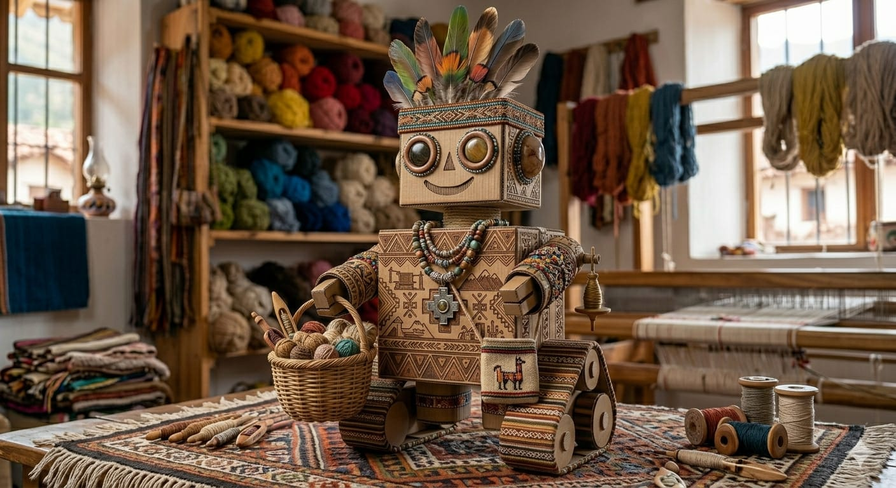
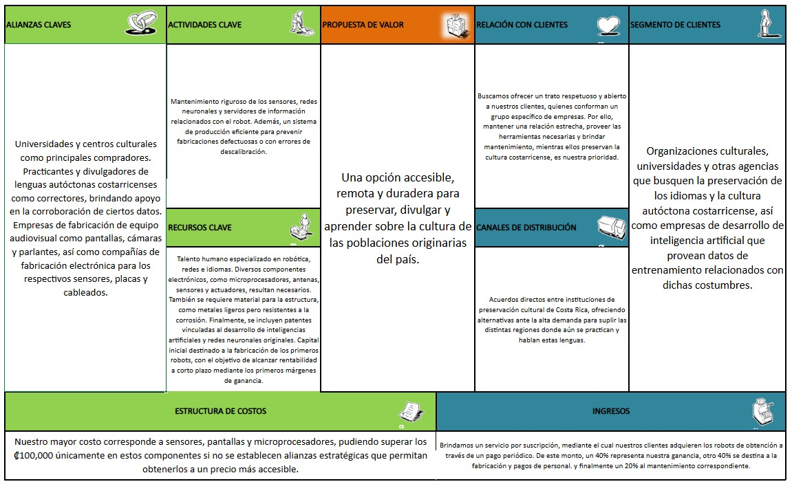
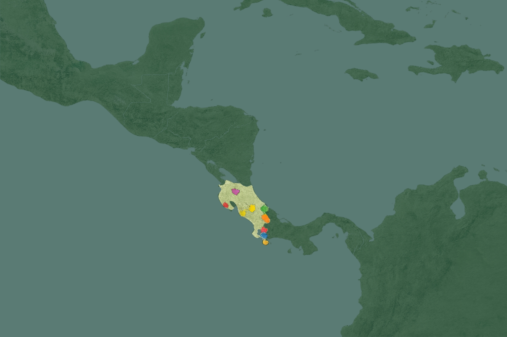

¿Qué buscamos?
Buscamos preservar y revitalizar las lenguas indígenas costarricenses mediante proyectos que unan tecnología y cultura. Nuestro objetivo es rescatar palabras, historias y saberes, transformándolos en herramientas accesibles para nuevas generaciones. Queremos crear espacios donde la identidad y la memoria colectiva se fortalezcan, asegurando que estos legados no se pierdan y puedan seguir transmitiéndose en el tiempo.

¿Como lo hacemos?
Partimos de la observación de la pérdida de identidad de los pueblos indígenas y la falta de recopilación institucional de sus lenguas. Para responder a esta necesidad, desarrollamos una plataforma robótica con doble función: Como librería digital, actúa como repositorio automatizado que almacena y protege datos estructurados y no estructurados, salvaguardando la memoria histórica. Como sistema tutor inteligente, ofrece ejercicios personalizados que replican la enseñanza de un instructor humano, apoyándose en técnicas de procesamiento de lenguaje natural. De esta manera, Bulutsë integra tecnología educativa avanzada para catalogar, interpretar y enseñar lenguas de tradición oral, asegurando su conservación y transmisión a futuras generaciones.

¿Por qué es rentable?
Bulutsë es rentable porque combina innovación tecnológica y preservación cultural en un modelo sostenible. Su sistema robótico y tutor inteligente permite ofrecer un servicio por suscripción a universidades, centros culturales y organizaciones que buscan conservar las lenguas autóctonas. El proyecto genera ingresos constantes mediante pagos periódicos, donde un 40% representa utilidad, otro 40% cubre fabricación y personal, y el 20% se destina al mantenimiento. Además, las alianzas estratégicas con instituciones académicas y fabricantes reducen costos de componentes como sensores y microprocesadores, aumentando los márgenes de ganancia. La demanda creciente de soluciones tecnológicas para la educación y la cultura asegura su viabilidad económica a corto y largo plazo, mientras su impacto social fortalece su valor en el mercado.

